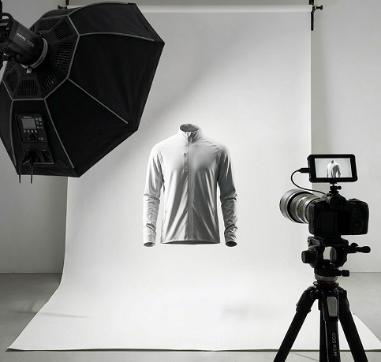
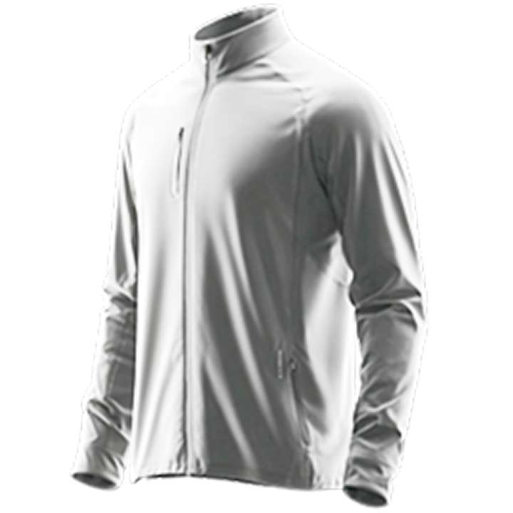

真实的亲和力
图形源于真实生活，并进行适度风格化提炼；避免纯粹抽象符号，在保持辨识度的同时呈现温暖、可触摸的质感。
系统图标用于统一功能表达、状态反馈和跨设备识别，确保不同尺寸与表现形式下保持清晰一致。
网格采用 24 × 24 的相对比例，不绑定 pt、dp 或 mm，以基础单位 a 描述全部构造关系。
所有图标优先以正方形网格制作；仅当图形隐喻无法成立时，才使用圆形、垂直或水平特殊网格。
四周保留 2a 安全区域，主体轮廓不得侵入，以保证小尺寸下的识别度。
标准描边为 1a，端点、转角与相交位置保持一致的视觉重量。
根据主体形态选择标准、圆形、垂直或水平网格，并统一处理复合语义。
标准
圆形
垂直
水平
辅助符号建议为主符号尺寸的 1/4，默认位于右下角；其面积不得超过主符号的一半，也不得遮挡主体识别特征。
右下角辅助符号
填充图标用于呈现丰富色彩与品牌视觉层次。
写实图标以真实物体为基础，通过统一光影、克制色彩和品牌化造型建立温暖、清晰且一致的视觉语言。
图形源于真实生活，并进行适度风格化提炼；避免纯粹抽象符号，在保持辨识度的同时呈现温暖、可触摸的质感。
所有图标处于统一的光源环境，以一致的光影方向塑造体积感，并建立品牌视觉世界的秩序与真实性。
色彩服务于品牌，通过标准色板传达层次与情感，确保整体和谐并保持品牌独特性。
光影对比更强烈，造型更硬朗，色彩更沉稳。体现专业与可靠。
核心写实图标以 256 × 256pt 为基准尺寸，并在同一品类中保持统一朝向、角标位置和光影条件。
| 规范维度 | 基准值 | 应用说明 |
|---|---|---|
| 画布与尺寸 | 256 × 256pt | 主体居中并保留稳定安全区 |
| 图形视角 | 四分之三侧视角 | 同一品类使用一致视角，避免明显透视变形 |
| 光线与色温 | 左上角45°光源/冷白光 | 高光柔和、明暗自然过渡，避免死黑 |
| 阴影与倒影 | 光影对比强烈（约 60%） | 阴影更加清晰，营造出一种坚实有力的感觉 |
| 辅助角标 | 右下角 | 位置与比例统一，不遮挡主体识别特征 |
采用左上角 45° 定向光源，通过高对比度与清晰过渡塑造硬朗坚实的产品体积感。

位于物体的左上边缘，形态清晰。
明暗交界线过度自然，反射光聚集在物体的右下部分，由环境光或主色光反射柔和的暗部光。
光影对比强烈（约 60%），阴影更加清晰，营造出一种坚实有力的感觉。
通过稳定的侧视视角与定向强光塑造体积感与专业沉稳的产品特征。

核心视角为四分之三侧视角，建立更具空间立体感的形态架构。
依靠左上角 45° 强烈光影对比塑造坚实有力的体积感与专业质感；同一品类保持一致视角。